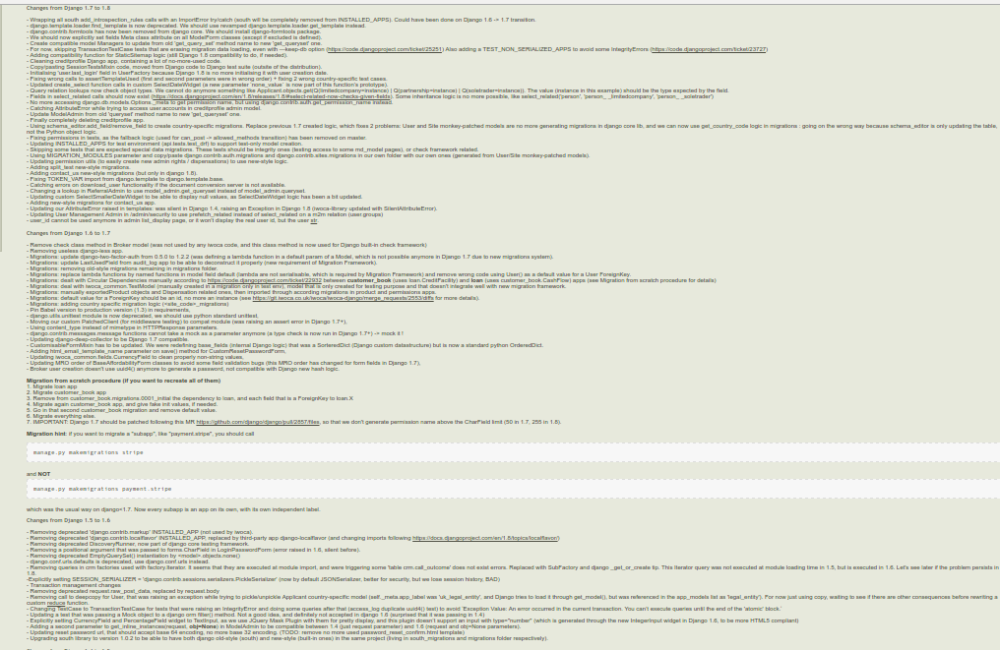
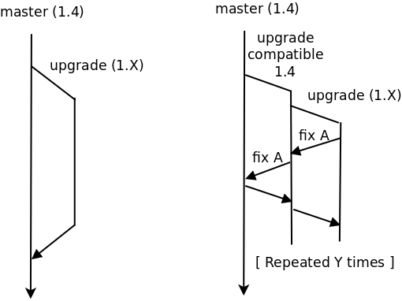
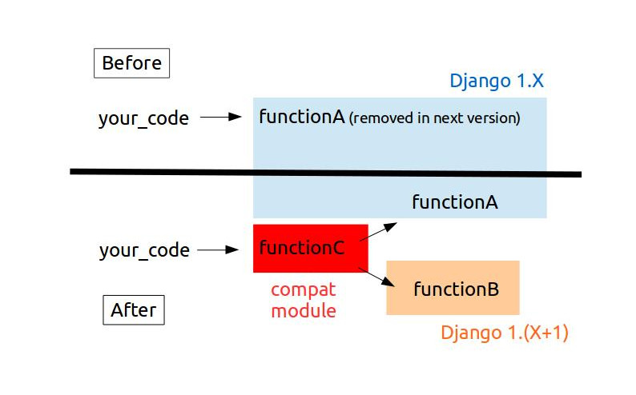
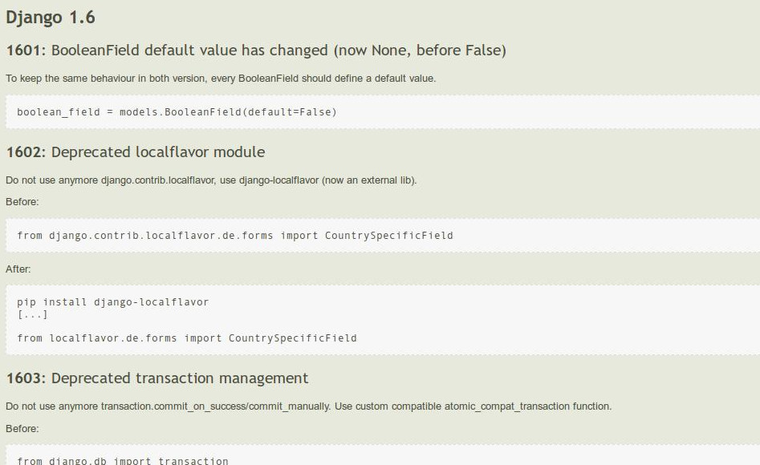

Django upgrade (1.4 -> 1.9) in a 100+ app project
Romain Garrigues (@rgarrigues)
- August 2015, Django 1.4
- Monolithic Django project:
- 100+ custom apps
- 200K lines of code
- Continuous deployment (~10 releases/day)
- 20 full-time developers
Problem: EOL Django 1.4
- 1.4: 23/03/2012
- 1.5: 26/02/2013 (no more supported)
- 1.6: 06/11/2013 (no more supported)
- 1.7: 02/09/2014
- 1.8: 01/04/2015
- ---> We are here: 01/08/2015 <---
- 1.4 EOL: 01/10/2015
- 1.9: 01/12/2015
Massive upgrade to next secure version
Old 1.4 code still produced
Process
- One version a time (1.5, 1.6, 1.7, 1.8, 1.9)
- Read Django release notes
- Create env with new Django version
- Run tests
- Fix each issue
- Manual testing
One fix at a time
- Compatibility 1.4 <--> 1.X
- Deprecated rules
- Documentation
Compatibility
Example 1
# compat/db.py
from django.db import transaction
if django.VERSION < (1, 6):
atomic_compat_transaction = transaction.commit_on_success
else:
atomic_compat_transaction = transaction.atomic
# your_app/views.py
from compat.db import atomic_compat_transaction
@atomic_compat_transaction
def your_view(request):
# Your view code here
Example 2
# compat/fields.py
if django.VERSION < (1, 8):
ALL_FIELDS = None
else:
ALL_FIELDS = '__all__'
# your_app/forms.py
from compat.fields import ALL_FIELDS
class YourForm(forms.ModelForm):
class Meta:
model = YourModel
fields = ALL_FIELDS
Deprecated rules
- Prevent regressions
- Management command launched during test phase
- Help people to fix it themself
Rules definition
'deprecated_transaction_system': {
'message': 'Transaction management has been completely changed. atomic is replacing old commit_on_success and other utils.',
'regex': r'.*(((@|with\s)transaction\.(commit_on_success|commit_manually))).*',
'number': '1603'
},
Example 1
$ ./manage.py check_deprecated_rules
./my_app/views.py
1603: Transaction management has been completely changed.
atomic is replacing old commit_on_success and other utils.
L204: @transaction.commit_on_success
Example 2
$ ./manage.py check_deprecated_rules
./mon_app/models.py
1601: models.BooleanField has to be initialised with default
parameter, as implicit default has changed between
Django 1.4 (False) and 1.6 (None).
L192: is_active = models.BooleanField()
Documentation
Migrations
Know migrations still generated in old-style (<1.7)
$ ./manage.py diff_migrations
Migrations diff:
{'your_app': ['0001_initial.py', '0002_add_new_field']}
Results
- No major issue
- Only small issues (custom django admin pages)
- One production AttributeError bug (investigate)
- No stress during the whole upgrade (months)
- django-seven
Key points for victory
- Decent test coverage (>60%)
- Django documentation
- Django deprecation cycle
- Respect of Django standards (avoid internal APIs)
- Lot of small changes
- Trivial final deployment